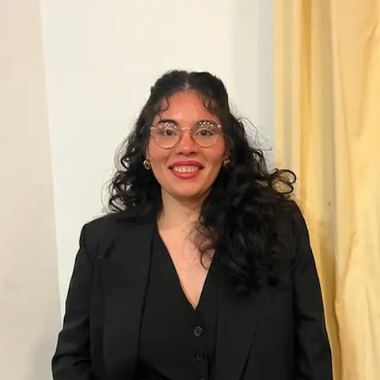

Diseño UX/UI
Diseño de interfaces, organización de contenidos y prototipado.
- Prototipado
- Canva
- BPMN
Estudiante de Sistemas de Información | UX/UI y desarrollo web
Disponible para pasantías y oportunidades junior
Me interesa crear interfaces claras, funcionales y fáciles de usar. Combino mis conocimientos en diseño y desarrollo web con mi experiencia en atención al público para pensar soluciones desde la perspectiva de las personas.

Diseño de interfaces, organización de contenidos y prototipado.
Estructuración y estilización de páginas web, con atención a la organización y a la experiencia de usuario.
Desarrollo de proyectos, control de versiones y uso de diferentes entornos de trabajo.
Organización de contenidos y comunicación visual para medios digitales.
Proyecto web
Desarrollo de una interfaz web para gestionar el proceso de contratación de un seguro de celular. Contempla el recorrido del usuario desde la cotización hasta la confirmación, con especial atención a la claridad de la información y la facilidad de navegación.
Proyecto académico grupal
Diseño de una aplicación de arte digital. Se trabajó en la identificación de necesidades de los usuarios, la definición de 15 requerimientos, la elaboración de flujos de tareas y el desarrollo de un prototipo de alta fidelidad.
Proyecto académico grupal
Desarrollo de un sistema de mesa de ayuda con JavaScript y Node.js, ejecutado en un entorno local y con pruebas de funcionamiento.
2026
En curso
2016 – actualidad
2022
2021
Soy estudiante de Sistemas de Información y tengo experiencia en atención al cliente y actividades comerciales.
Me interesa la tecnología, especialmente el diseño de interfaces y el desarrollo web. Disfruto aprender herramientas nuevas, resolver problemas y encontrar maneras de hacer que los productos digitales sean más claros y fáciles de utilizar.
Mi experiencia laboral me enseñó la importancia de escuchar, comunicar y comprender las necesidades de las personas. Hoy busco aplicar esas habilidades en proyectos tecnológicos mientras continúo desarrollando mis conocimientos.
Comprender las necesidades de las personas es el punto de partida para crear buenas experiencias.
Busco soluciones simples, contenidos organizados y experiencias fáciles de comprender.
Me interesa experimentar, poner en práctica lo aprendido y mejorar a partir de cada proyecto.
Estoy abierta a oportunidades junior, pasantías y proyectos donde pueda seguir aprendiendo y aportar mis conocimientos. ¡Escribime!
luciatejeda29@gmail.com